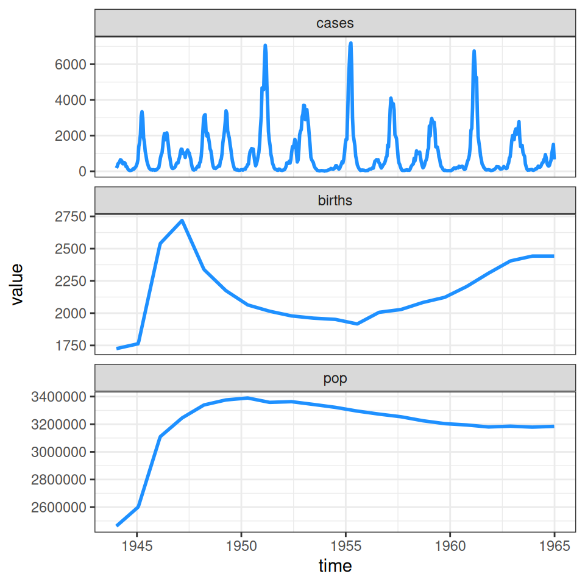
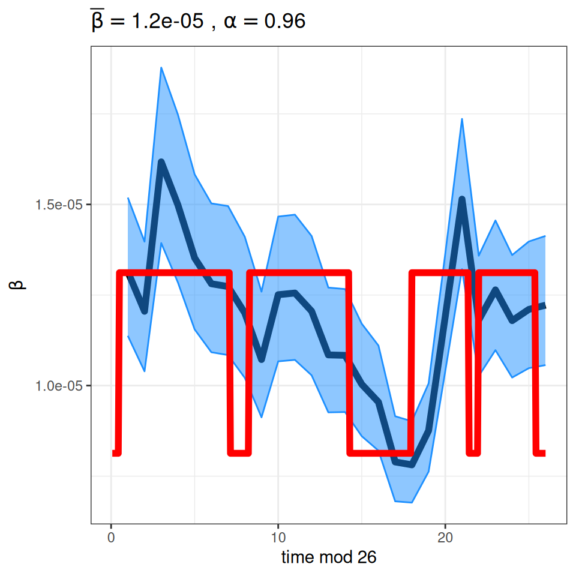
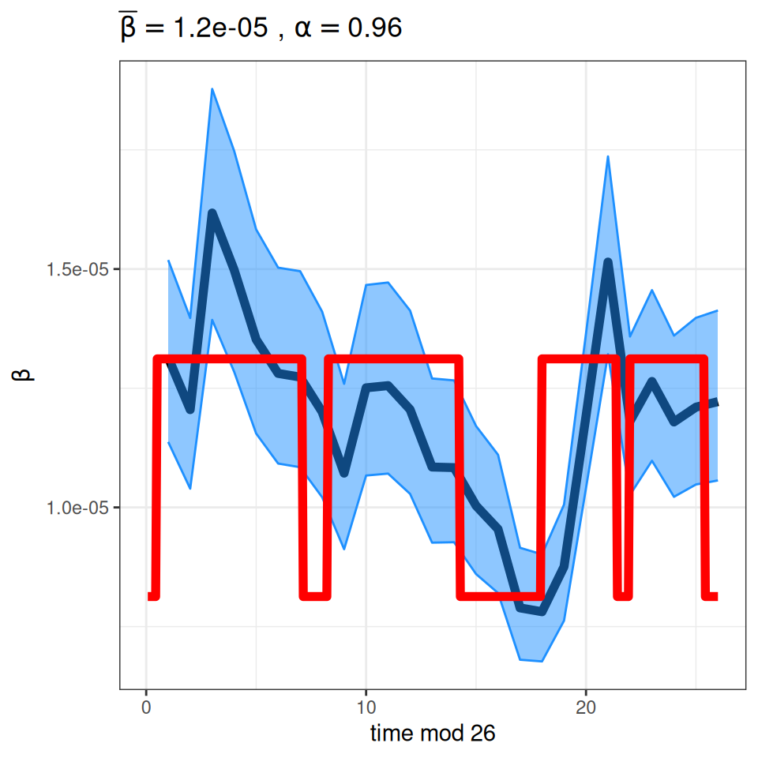
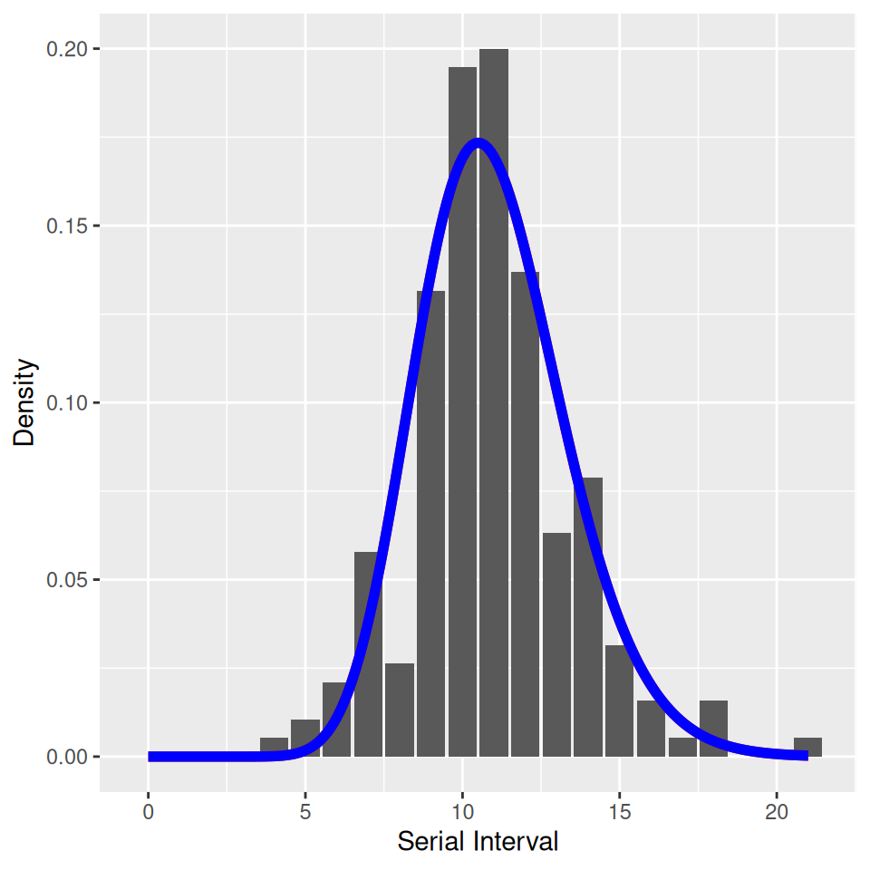

10 Seasonality and Measles Epidemics
Andrew Conlan (ajkc2@cam.ac.uk)
10.1 Measles data and challenge
Implement a deterministic model to predict the impact of vaccination on the timing of outbreaks of measles in London. You should make the following assumptions to proceed:
- Constant population size of 3.3 million
- Birth rate of 20 per thousand per year
- Basic reproduction number \(R_{0} = 17\) (for sinusoidal forcing model)
- Cases can be approximately calculated from the number of infectives by multiplying by 7/5 (i.e. reporting period /average infectious period)
- The reporting rate during this period was 40%
A time-series of measles cases from London from 1950–1964 (immediately prior to the introduction of vaccination in the UK) are included as part of the tsiR package in R that provides historical time-series data from England and Wales along with functions to work with the so-called time-series \(SIR\) model (\(TSIR\))—a discrete time chain binomial model that can be used to very successfully model and predict measles dynamics (and to a lesser extent other strongly immunizing childhood infections).
The plotdata function from the tsiR package provides a summary of the incidence and demographic data (birth rates and population size):
require(tsiR)
require(tidyverse)
require(ggplot2)
require(patchwork)
require(deSolve)
data("twentymeas")
LondonMeas <- twentymeas[["London"]]
plotdata(LondonMeas)
As you can see, our simplifying assumption of fixed birth and population size glosses over the “baby boom” post WWII that pushed the typical two-year cycle of measles epidemics into annual outbreaks and led (along with migration) to an increase in the population size. The \(TSIR\) model can be used to estimate the seasonal variation in transmission rates presented in the background slides (on which we overlay the typical pattern of school terms in England and Wales calculated by the mk_terms function below):
LondonRes <- runtsir(data=LondonMeas, IP = 2,
xreg = 'cumcases', regtype='gaussian',
alpha = NULL, sbar = NULL,
family = 'gaussian', link = 'identity',
method = 'negbin', nsim = 100)## alpha mean beta mean rho mean sus
## 9.60e-01 1.19e-05 4.57e-01 1.14e+05
## prop. init. sus. prop. init. inf.
## 3.01e-02 6.12e-05mk_terms <- function(beta, alpha)
{
s = 273.0/364.0
bh = (beta*(1 + 2*alpha*(1-s)))
bl = (beta*(1 - 2*alpha*s))
terms = numeric(364)
terms[c(252:299)] = bh
terms[c(300:307)] = bl
terms[c(308:355)] = bh
terms[c(356:364)] = bl
terms[c(1:6)] = bl
terms[c(7:99)] = bh
terms[c(100:115)] = bl
terms[c(116:199)] = bh
terms[c(200:251)] = bl
return(terms)
}
plotbeta(LondonRes) + annotate('line',x=seq(1,364,1)/14,y=mk_terms(mean(LondonRes$beta),0.21),lwd=2,col='red') 

Important to note that the estimated transmission parameters from the \(TSIR\) model do not translate directly to the transmission parameters for continuous-time (ordinary differential or stochastic) models. The qualitative pattern is informative rather than the specific estimates. (Conceptually I would consider these estimates to be closer to reproduction numbers than transmission rates as they are usually presented.). Note also that the \(\alpha\) used in the \(TSIR\) model is not an amplitude of seasonality but a correction (i.e. fudge) factor for the density dependence of the transmission term which—in some sense—can be used to adjust for artifacts arising from the discrete time approximation.
We also provided you with Hope-Simpson’s estimates of the serial interval of measles and illustrated that it suggests that the latent and infectious periods of measles are less dispersed (less variable) than exponential and well described by a gamma distribution where the shape and scale parameters are approximately equal:
household <- as_tibble(read.csv('Materials/BYOM/Data/measles_hope_simpson.csv'))
SIR_gamma <- tibble(interval=seq(0,21,0.1),value=dgamma(seq(0,21,0.1),22,22/11))
SEIR_gamma <- tibble(interval=seq(0,21,0.1),value=dgamma(seq(0,21,0.1),22,22/11))
ggplot(household,aes(x=interval,y=B/sum(B))) + geom_col() +
annotate('line',x=SIR_gamma$interval,y=SIR_gamma$value,col='red',lwd=2) +
annotate('line',x=SEIR_gamma$interval,y=SEIR_gamma$value,col='blue',lwd=2) +
xlab('Serial Interval') + ylab('Density')